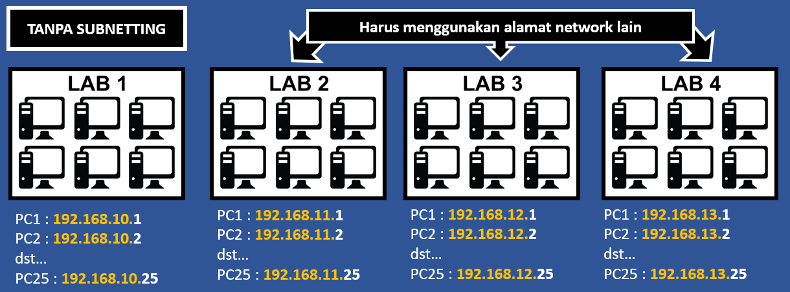
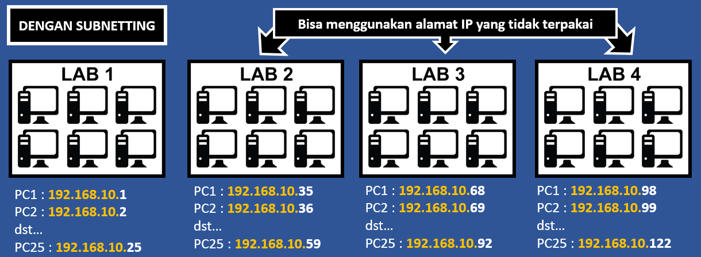

Subnetting merupakan pemecahan sebuah Jaringan / Network menjadi 2 atau lebih Subnetwork yang lebih kecil. Dengan subnetting akan menciptakan beberapa network tambahan, tetapi mengurangi jumlah maksimum host yang ada dalam tiap network tersebut.
Contoh perbedaan pengelolaan jaringan dengan dan tanpa subnetting. Terdapat 4 buah Lab dengan masing-masing Lab terdapat 25 Host.

Jika alamat IP tidak dipecah menjadi lebih kecil maka masing-masing Lab harus menggunakan alamat Jaringan/Network yang berbeda.
Lab 1: 192.168.10.0/24
Lab 2: 192.168.11.0/24
Lab 3: 192.168 12.0/24
Lab 4: 192.168.13.0/24
Masing masing Jaringan/Network mempunyai banyak sisa IP yang tidak dipakai

Jika alamat IP dipecah menjadi lebih kecil maka masing-masing Lab akan menggunakan Jaringan/Network yang sama tetapi menjadi subnetwork yang lebih kecil.
Lab 1: 192.168.10.0/27
Lab 2: 192.168.10.32/27
Lab 3: 192.168 10.64/27
Lab 4: 192.168.10.96/27
Lab 2 s.d. 4 bisa menggunakan sisa alamat IP yang tidak dipakai di Lab 1.
CIDR Subnetting digunakan untuk membagi alamat IP menjadi subnetwork yang lebih kecil dimana antara satu subnetwork dengan subnetwork yang lain besarnya sama.
VLSM Subnetting digunakan untuk membagi alamat IP menjadi subnetwork yang lebih kecil dimana antara satu subnetwork dengan subnetwork yang lain besarnya bisa berbeda.
Sebelum melakukan pemecahan alamat IP menggunakan VLSM, buat tabel subnetting dengan format seperti berikut:| Prefix | Subnetmask Desimal |
Subnetmask Biner |
Total IP / Blok Subnet |
Banyak host tiap subnet |
Banyak subnet |
|---|---|---|---|---|---|
/24 |
|
|
|||
/25 |
|
|
|||
/26 |
|
|
|||
/27 |
|
|
|||
/28 |
|
|
|||
/29 |
|
|
|||
/30 |
|
|
Sebuah sekolah mendapatkan alamat IP 192.168.100.1/24 dari ISP. Alamat itu akan digunakan untuk ruang-ruang dengan kebutuhan host sebagai berikut:
R. Guru: 8 Host
R. Server: 3 Host
R. Lab 1: 18 Host
R. Lab 2: 45 Host
R. Lab 3: 28 Host
Tentukan alamat IP masing-masing ruang menggunakan metode subnetting VLSM!